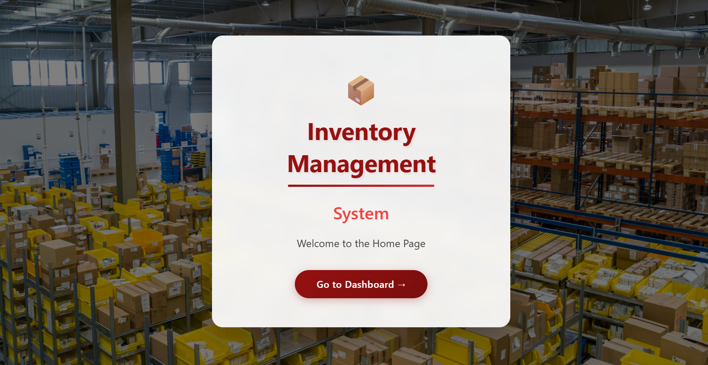

Click Flip to see details • Click images to enlarge
Web-based project management and tracking application designed to streamline project workflows, monitor progress, manage resources, and improve team collaboration.
View on GitHub
Web-based application used to manage and track inventory efficiently. Add items, record stock received, issue stock, and monitor inventory levels.
View on GitHub